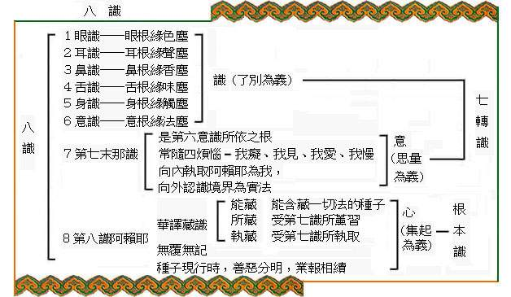
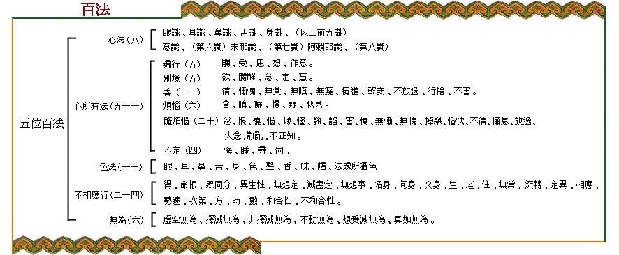

八识百法
注：
1）第七识名末那识，末那二字，是梵语的音译，义译曰意，但恐与第六识混淆，故保留末那原名。第七识唯一的作用，就是‘恒审思量’，思量些什么呢，它误认为第八识是恒、是一、是遍、是主宰的‘自我’。它恒常的审虑思量，执著自我。
2）第八识又名阿赖耶识，这也是梵语的音译，此在天竺义为“无没”，在我国译为藏识。


《大乘百法明门论》节选
◎天亲菩萨造
◎ 唐三藏法师玄奘译
如世尊言。一切法无我。何等一切法。云何为无我。一切法者。略有五种。一者心法。二者心所有法。三者色法。四者心不相应行法。五者无为法。一切最胜故。与此相应故。二所现影故。三位差别故。四所显示做。如是次第。第一心法。略有八种。一眼识。二耳识。三鼻识。四舌识。五身识。六意识。七末那识。八阿赖耶识。第二心所有。略有五十一种。分为六位。一遍行有五。二别境有五。三善有十一。四根本烦恼有六。五随烦恼有二十。六不定有四。一遍行五者。一作意。二触。三受。四想。五思。二别境五者。一欲。二胜解。三念。四三摩地。五慧。三善十一者。一信。二精进。三惭。四愧。五无贪。六无嗔。七无痴。八轻安。九不放逸。十行舍。十一不害。四烦恼六者。一贪。二嗔。三痴。四慢。五疑。六不正见。五随烦恼二十者。一忿。二恨。三恼。四覆。五诳。六谄。七憍。八害。九嫉。十悭。十一无惭。十二无愧。十三不信。十四懈怠。十五放逸。十六昏沉。十七掉举。十八失念。十九不正知。二十散乱。六不定四者。一睡眠。二恶作。三寻。四伺。第三色法。略有十一种。一眼。二耳。三鼻。四舌。五身。六色。七声。八香。九味。十触。十一法处所摄色。第四心不相应行法。略有二十四种。一得。二命根。三众同分。四异生性。五无想定。六灭尽定。七无想报。八名色。九句身。十文身。十一生。十二住。十三老。十四无常。十五流转。十六定异。十七相应。十八势速。十九次第。二十时。二十一方。二十二数。二十三和合性。二十四不和合性。第五无为法者。略有六种。一虚空无为。二择灭无为。三非择灭无为。四不动灭无为。五想受灭无为。六真如无为。言无我者。略有二种。一补特伽罗无我。二法无法。
http://www.fosss.org/jcxs/100.htm